Sesión 1: Introducción a Excel
Conceptos básicos, entorno de trabajo y atajos esenciales.
Resumen de la Clase
El pasado sábado 17 de enero de 2026 tuvimos nuestra primera sesión introductoria a Excel.
Temas Cubiertos:
0. Qué es Excel:
Es una aplicación de hoja de cálculo que permite gestionar y calcular datos numéricos y alfanuméricos. Es la herramienta estándar para el procesamiento de datos mediante el uso de fórmulas, funciones y herramientas de análisis.
Se usa Excel para:
- Cálculo matemático.
- Organización de la información.
- Análisis de datos.
- Visualización de datos mediante gráficos.
- Reportes y consolidaciones de datos.
1. Ventana Principal de Excel
Partes de la ventana principal de Excel:

2. Atajos de teclado
Un atajo de teclado es una combinación de teclas que se presionan para realizar una acción específica.
| Atajo | Acción | Referencia |
|---|---|---|
| Windows + U | Abre la configuración de accesibilidad | 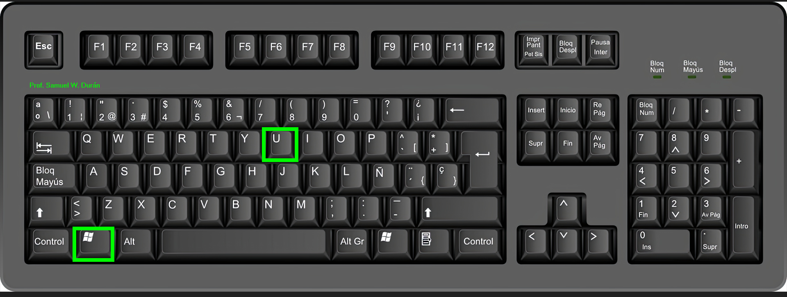 |
| Windows + E | Abre el explorador de archivos | 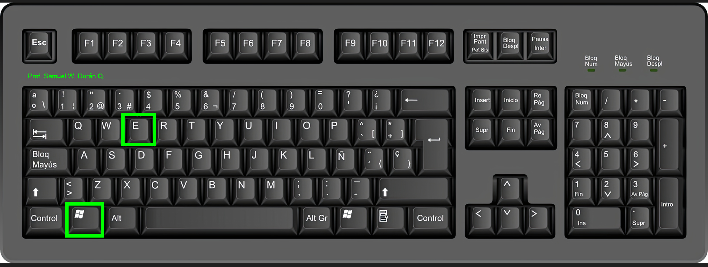 |
| Ctrl + Shift + N | Crea una nueva carpeta | 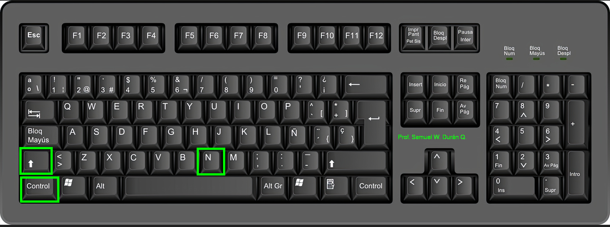 |
| F12 / Fn + F12 | Abre "Guardar como" | 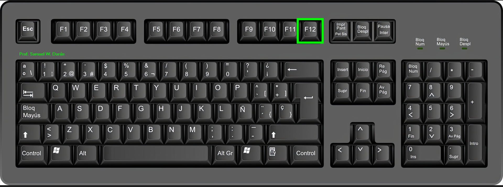 |
| Ctrl + Fin | Ir al final de un bloque de datos | 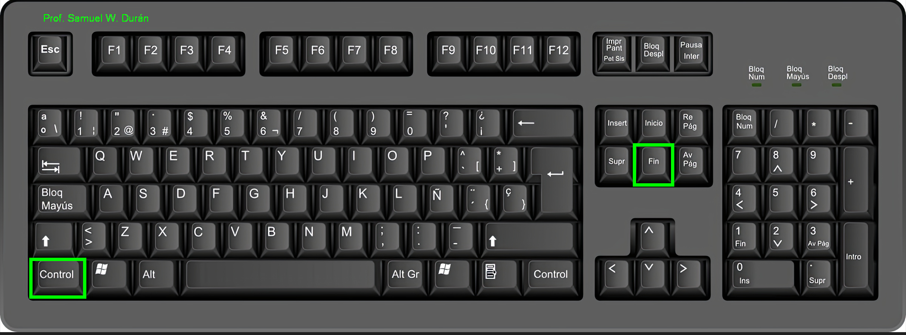 |
| Ctrl + Inicio | Ir al inicio de un bloque de datos | 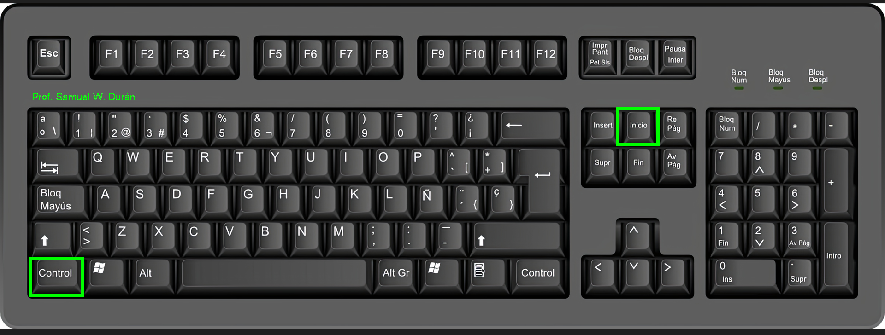 |
| Ctrl + Flecha Der | Ir a la última columna | 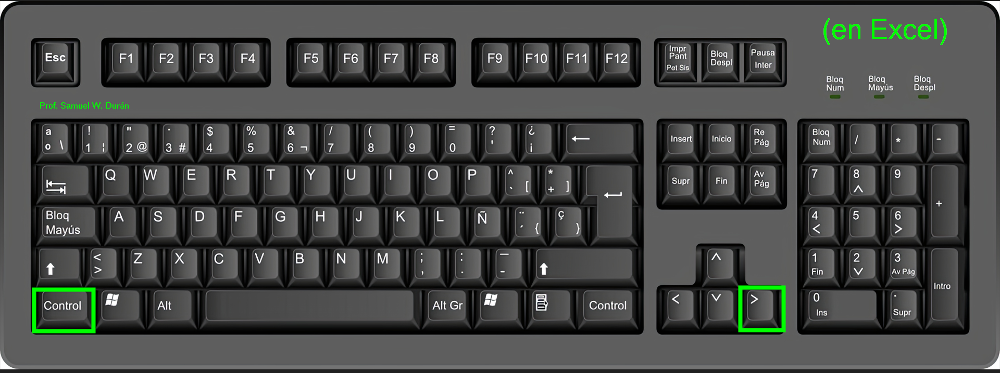 |
| Ctrl + Flecha Izq | Ir a la primera columna | 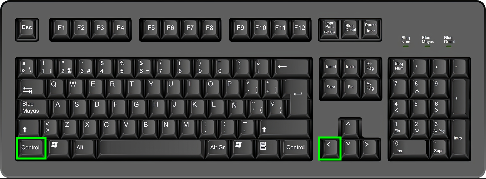 |
| Ctrl + Flecha Arr | Ir a la primera fila | 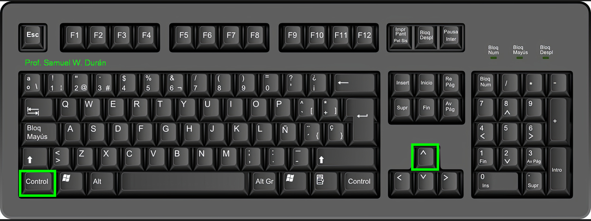 |
| Ctrl + Flecha Abj | Ir a la última fila | 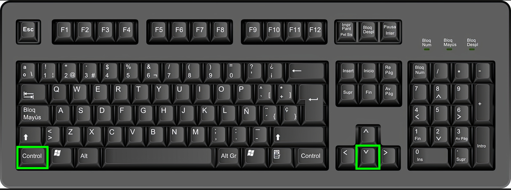 |
| Ctrl + P | Vista preliminar de Impresión | 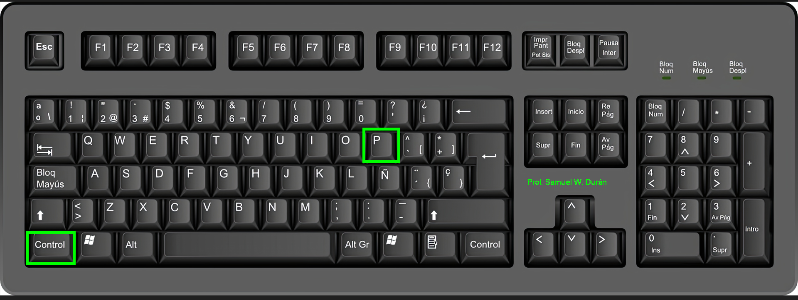 |
| Ctrl + Z | Deshacer | 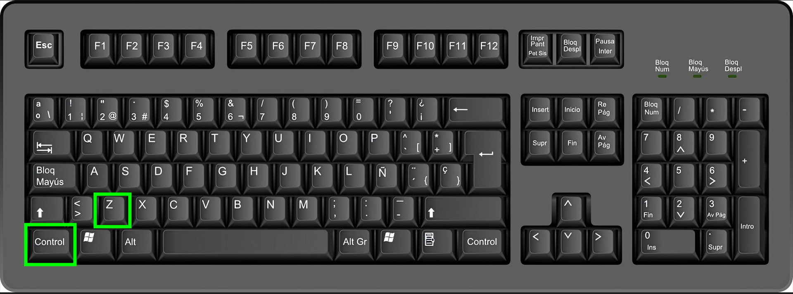 |
| Ctrl + U | Crear un nuevo libro de Excel | 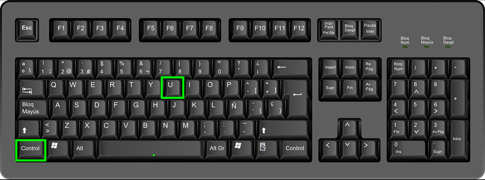 |
| Alt + F4 | Cerrar ventana actual | 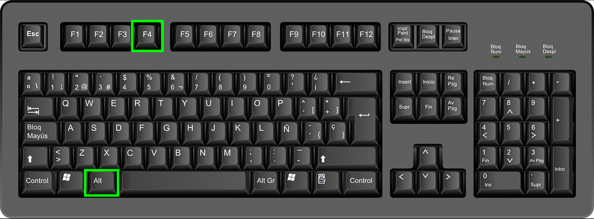 |
Tarea
Se subirá en el transcurso de la semana (Pendiente)...